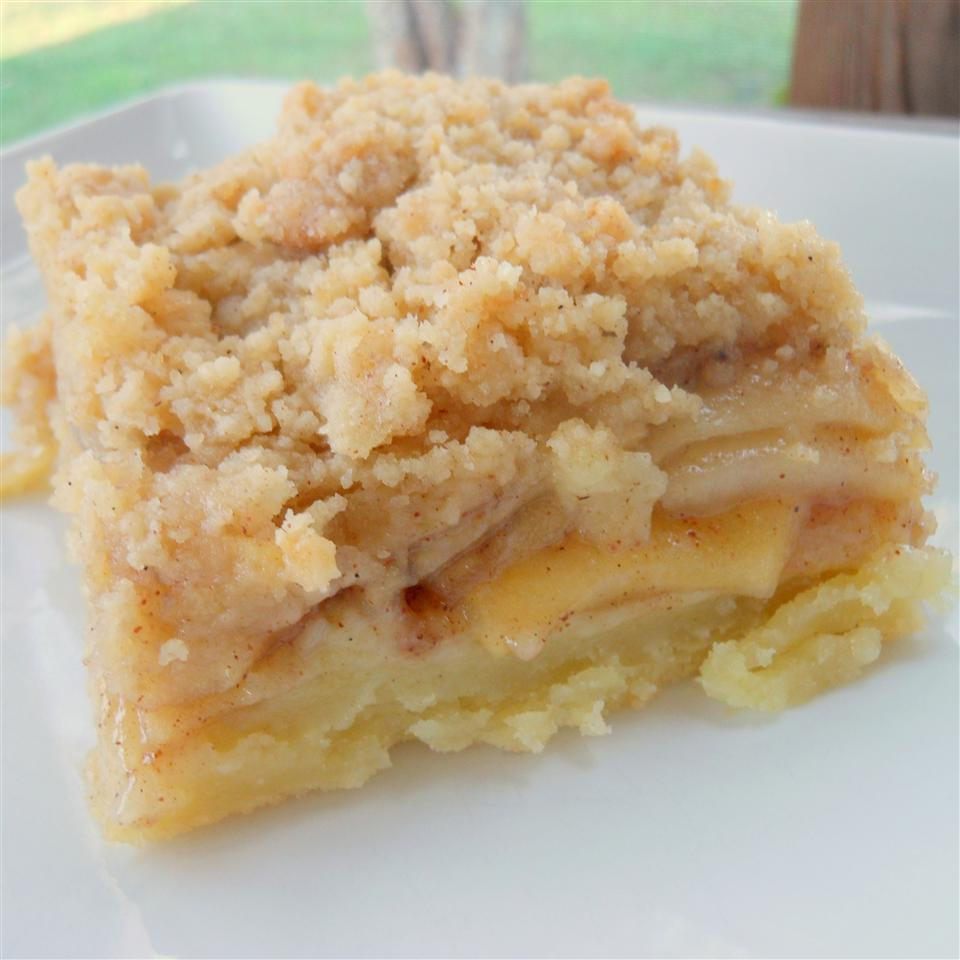

Apple Slab Pie

Description
This scrumptious version of a traditional apple pie is perfect for feeding lots of party-goers with a sweet treat!
Ingredients
Serves 15
- 1 1⁄2 cups all-purpose flour
- 1 1⁄2 tablespoons white sugar
- 1⁄2 cup shortening
- 1⁄4 teaspoon salt
- 1⁄2 teaspoon baking powder
- 2 egg yolks, beaten
- 4 tablespoons water
- 8 apples - peeled, cored, and cut into thin wedges
- 2 tablespoons lemon juice
- 2 tablespoons all-purpose flour
- 1 3⁄4 cups white sugar
- 1⁄2 teaspoon ground cinnamon
- 2 tablespoons butter
- 1 cup all-purpose flour
- 1 teaspoon ground cinnamon
- 2⁄3 cup brown sugar
- 2⁄3 cup butter
Directions
- Preheat oven to 350° Fahrenheit (175° C.). In a large bowl, combine flour, sugar, salt and baking powder. Cut in shortening until mixture resembles coarse crumbs. Mix egg yolk and water together and mix into flour until it forms a ball. Roll out to fit the bottom of a 10x15 inch pan.
- In a large bowl, combine apples, lemon juice, 2 tablespoons flour, sugar and cinnamon. Pour fillin into pie crust and dot with 2 tablespoons butter.
- In a medium bowl, combine 1 cup flour, 1 teaspoons cinnamon, 2⁄3 cup brown sugar and 2⁄3 cup butter. Cut in the butter until crumbly, then sprinkle over apples.
- Bake in the preheated oven for 60 minutes, or until topping is golden brown.